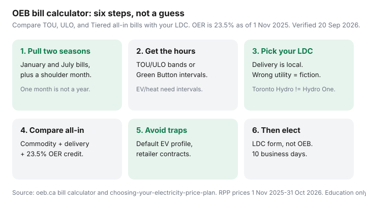

Utilities · Canada
How to use the OEB bill calculator to pick your Ontario electricity plan
Ontario households pick a hydro plan the way they pick a hockey team: a neighbour said Ultra-Low Overnight is cheaper, so they file a form. The Ontario Energy Board’s bill calculator exists because that guess is usually wrong. It prices Time-of-Use, Ultra-Low Overnight, and Tiered on your kilowatt-hours — including your utility’s delivery and the 23.5% Ontario Electricity Rebate (in force 1 November 2025).
This is a calculator workflow using Canadian bill anatomy, not a second copy of the TOU vs ULO vs Tiered rate card. If you rent, decode the lease in heat included vs hydro first. If the house leaks, start with air sealing — a plan switch will not fix a patio door.
Disclosure: Home energy monitors are an offer type that can help you see hourly kWh. Saving Optimizer may earn a commission if we later add partner links. We do not currently claim monitor-brand or utility partnerships. This is education, not a rate quote or legal advice.
Key takeaways
- Bring winter and summer bills (January and July), not one shoulder month. TOU hours and Tiered thresholds flip 1 May and 1 November; your air conditioner and your heat pump do too.
- The calculator needs when you used power, not just how much. Pull TOU/ULO bands from the Electricity line or Green Button / interval data from your LDC portal — especially with an EV or electric heat.
- Compare the all-in estimate: commodity + your LDC’s delivery and regulatory charges − the 23.5% OER. Switching plans does not shop delivery away.
- Common misses: accepting the default EV profile, ignoring delivery, modelling one month, and running the tool while still on a retailer contract.
- The OEB does not switch you. File your LDC’s election (portal, PDF, or phone). A complete form at least 10 business days before the next period must take effect then; a switch only starts on a billing-period boundary.
What data you need from past winter and summer bills
Open two bills you understand: a January (or other 1 Nov–30 Apr winter month) and a July (1 May–31 Oct summer). Add a shoulder month if you have a heat pump or a pool. You want:
- Total kWh for the period, and the period’s start and end dates (billing periods are not calendar months).
- The Electricity line split by TOU or ULO band if you are already on a clock. Typical TOU bills already print off-peak / mid-peak / on-peak kWh.
- Your LDC name — Toronto Hydro, Hydro One, Alectra, Hydro Ottawa, and the rest charge different delivery. The calculator is useless on the wrong utility.
- Whether you are on RPP or a retailer contract. A contract is not Customer Choice. Cancel it first if you want TOU / ULO / Tiered back.
The OEB’s own instructions (used 20 Sep 2026) say to get several months of bills and to remember winter use is not summer use. That is the whole job. A March bill of 620 kWh tells you nothing about a 1,400 kWh electrically heated January or a 900 kWh air-conditioned July.
Write the numbers on one page before you touch the tool. If the portal and the paper bill disagree, believe the bill you paid and call the LDC about the portal.

Where utilities publish hourly or TOU-band usage online
Most Ontario LDCs now show usage in the account portal. The labels differ; the job is the same.
| What you need | Typical place | Who must have it |
|---|---|---|
| TOU / ULO band kWh | Electricity line on the PDF bill; usage graph in My Account | Anyone already on a clock plan |
| Hourly / interval data | Green Button download or “interval usage” export | EV, electric heat, heat pump, or a weird work-from-home week |
| 12-month daily average | The historical bar chart printed on many bills | Sanity check — not a substitute for two seasons |
Toronto Hydro, Hydro One, and Alectra all expose some version of this. If you cannot find Green Button, email the LDC and ask for interval data for the last 12 months. An energy monitor on the panel is a useful cross-check for the next month; it does not replace the official download for a plan election.
Condo catch: if a unit sub-meter provider prints your bill, you generally cannot elect a plan. That choice sits with the building’s principal consumer. The calculator can still tell you whether the building is on a dumb clock — it cannot file the form for you.
Comparing TOU, ULO, and Tiered total bills including delivery
Open the residential Customer Choice calculator. The OEB’s landing page also links a separate retailer-contract calculator — that is a different tool. For plan choice:
- Select summer or winter to match the month you are modelling. Do both seasons.
- Answer the lifestyle / EV questions only to seed a default profile, then override with your kWh.
- Enter TOU bands from the bill. If you have ULO intervals, enter those too. The advanced “lock” controls let you move hours between clocks without the tool silently rewriting the other plan.
- Confirm the utility so delivery matches your territory.
- Read the total estimated bill for all three plans, not just the Electricity line. Delivery, regulatory charges, and OER should be in that total.
Prices the calculator is pricing (1 Nov 2025–31 Oct 2026 commodity): TOU 9.8 / 15.7 / 20.3 ¢; ULO overnight 3.9 ¢ and weekday 4–9 p.m. 39.1 ¢; Tiered 12.0 ¢ then 14.2 ¢ after 600 kWh (summer) or 1,000 kWh (winter). Those ¢ do not include delivery. See the rate-card companion if you need the hour tables.
Write the annual gap in dollars. A $40 year is not a project. A few hundred dollars plus a lifestyle you already live (the car charges at 1 a.m.; nobody cooks at 6 p.m.) is a form.
Why the Ontario Electricity Rebate changes the net comparison
The Ontario Electricity Rebate is a pre-HST credit — 23.5% of the eligible base as of 1 November 2025 (O. Reg. 363/16; OEB RPP backgrounder 17 Oct 2025). Hydro One describes the same change from 13.1%. The OEB’s typical 700 kWh illustration is about $36 / month off the bill. That is mood music, not your file.
Two implications for the calculator:
- OER applies to eligible RPP bills on all three plans. You do not “lose the rebate” by choosing ULO. The OEB says switching does not affect OER or OESP eligibility.
- Because OER is a percentage of the eligible base, a plan that raises the pre-rebate total also raises the credit — and still leaves you paying more. Compare net dollars, not ¢/kWh screenshots.
Retailer contracts are outside this. Global Adjustment usually appears as its own line. Do not paste a contract ¢ into the Customer Choice calculator and call it research — use the retailer-comparison calculator, or cancel the contract and come back to RPP.
Common calculator mistakes (one month of data, ignoring delivery)
- One month. A mild October on TOU is a different machine than a January heat-pump recovery or a July afternoon on air conditioning. Model both seasons.
- Ignoring delivery. Customer Choice only edits the Electricity commodity. A “cheap 3.9 ¢” overnight still rides your LDC’s poles, wires, and monthly service charge. The calculator includes delivery when you pick the right utility; a napkin ¢ comparison does not.
- Default EV profile. The tool will invent a typical EV owner if you tick the box. Your car may charge at 6 p.m. in the driveway. Override with intervals.
- Typical residential percentages. The OEB notes households already use nearly two-thirds of kWh off-peak on TOU. You are not typical if you work from home, heat with baseboards, or plug an EV in at dinner.
- Wrong LDC / USMP / retailer. Hydro One rural delivery is not Toronto Hydro. A unit sub-meter bill is not an LDC bill. A retailer contract is not RPP.
If the calculator and last month’s bill disagree by a lot, stop. You have a bad input. An energy monitor can explain the next month; it cannot rewrite last January.
Decision checklist before you submit an election form
The OEB does not process elections. Your LDC must make a form available (website, email, or mail at minimum; many offer a portal or phone). Official timing (choosing-your-electricity-price-plan page, used 20 Sep 2026):
- Confirm you are an RPP customer with a smart meter, no retailer contract, and not a USMP-billed suite.
- Have a recent bill in hand — you need the account number.
- File through the LDC portal if it exists (Toronto Hydro, Hydro One, Alectra, and Hydro Ottawa all document Customer Choice). Do not mail a Toronto Hydro PDF to Thunder Bay.
- Within 10 business days the utility must either reject the form with a reason or tell you when the new plan starts.
- If they have a complete form at least 10 business days before the next billing period, the new plan must start that period. Inside that window they may still make it — or they wait until the period after. You stay on the old plan until the boundary.
- Calendar the cut-off. Toronto Hydro’s consumer page phrases a similar idea as 10 calendar days; believe the confirmation email over a blog.
- You can switch again later. Nothing is permanent. Doing nothing leaves you on the current plan. Prices still update each 1 November.
If the honest annual gap is smaller than one dinner out, stay put and seal the attic. If you have an EV, continue in ULO for home charging before you fall in love with 3.9 ¢.
Sources & date stamps
- Ontario Energy Board, Bill calculator — compare TOU / ULO / Tiered with delivery, regulatory charges, and OER (used 20 Sep 2026).
- OEB residential Customer Choice calculator — seasonal toggle, optional EV profile, advanced band overrides.
- OEB, Choosing your electricity price plan — 10-business-day acknowledgement; switch only at a billing-period start; USMP and retailer limits.
- OEB electricity rates — RPP commodity 1 Nov 2025–31 Oct 2026; OER 23.5%.
- OEB RPP backgrounder, 17 Oct 2025 — OER change to 23.5%; typical 700 kWh illustration (~$36 / month).
- ontario.ca, Electricity price plans — eligibility, USMP/bulk-meter limits (page updated 9 Sep 2026).
- Toronto Hydro, Customer Choice — portal / PDF path; retailer-contract ineligibility.
Frequently asked questions
Does the OEB calculator change my plan when I click Compare?
No. The calculator is an estimate. To switch, you file an election form with your local utility (LDC). The OEB does not process switches.
Why does the calculator total not match last month’s bill?
Wrong LDC, wrong season, a retailer contract, or you typed a typical profile instead of your hours. Fix the inputs before you elect.
Does the 23.5% Ontario Electricity Rebate apply to all three plans?
Yes for eligible RPP bills. Switching TOU, ULO, or Tiered does not drop OER. Retailer contracts are a different product.
Can a condo on a unit sub-meter switch plans?
Usually no. Unit sub-meter provider customers cannot elect a plan; the building’s principal consumer can. Confirm who prints the bill.
How much notice does my utility need?
OEB rule: if the LDC has a complete election at least 10 business days before the next billing period, the new plan starts that period. Some portals phrase it as 10 calendar days. A switch only starts on a billing-period boundary.